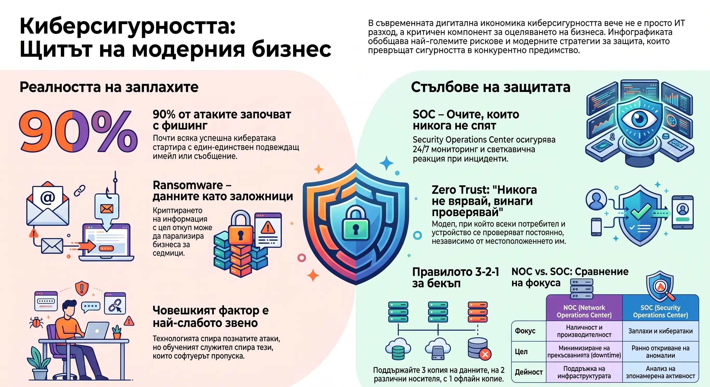

SOC · Ransomware · Monitoring & response
SOC срещу ransomware: как мониторингът подпомага реакцията
SOC може да наблюдава налични security сигнали, да ги анализира и корелира, да ескалира потвърдени или подозрителни събития и да подпомага договорените response действия. Той не е самостоятелна гаранция срещу ransomware: резултатът зависи от обхвата, telemetry, правилата, комуникацията и ясното разпределение на отговорностите.

⚠️ Важна бележка: Тази публикация е с информационна и образователна цел и не представлява юридическо или правно тълкуване на приложимото законодателство. Обстоятелствата варират, а нормативните изисквания се променят. При конкретен казус се консултирайте с квалифициран юрист.
Краткият отговор: при ransomware риск SOC добавя наблюдение, триаж, корелация и ескалация между източници като EDR, identity, network и cloud logs. Дали SOC може и да блокира акаунт, изолира endpoint или задейства друга реакция зависи от договора и runbook-а. Техническото containment не е същото като пълно incident response, почистване или възстановяване.
Какво означава „SOC срещу ransomware“?
Това не е противопоставяне между SOC услуга и ransomware като технология. Практическият въпрос е как оперативният мониторинг се вписва в защитата и реакцията на организацията, когато се появят сигнали за компрометиране или криптиране. SOC може да работи вътрешно, външно или в хибриден модел; конкретният обхват зависи от средата и договора.
Полезният процес започва преди инцидента: избрани лог източници и активи се включват в мониторинга, алармите се маршрутизират към екип, а контактите и ескалациите се проверяват. При сигнал SOC събира контекст, оценява увереността и възможното въздействие, документира какво е известно и уведомява определените лица. Следващите действия се изпълняват от страната, която има нужните права и оперативна отговорност.
Кой какво поема?
| Функция | Типичен принос при ransomware | Какво не следва автоматично |
|---|---|---|
| SOC мониторинг | Приемане на договорените telemetry източници, анализ и корелация на alerts, триаж, ескалация и отчет. | Пълно покритие на всички активи, изчерпателно разследване или право за промяна на клиентски системи. |
| EDR платформа | Endpoint telemetry и, според продукта и настройките, локално блокиране, карантина или изолация на устройство. | Мониторинг на всички identities, мрежови устройства и cloud ресурси или организационна координация сама по себе си. |
| Incident response (IR) | Организирано разследване, определяне на обхвата, containment/eradication препоръки и координация според ангажимента. | Автоматично включване само защото има SOC договор; провери дали има отделен IR обхват и activation process. |
| IT и бизнес собственици | Дават контекст за критичността, потвърждават промени и изпълняват или одобряват действията според ролите. | Решения за бизнес прекъсване, правни уведомления или възстановяване не могат да се делегират неясно. |
| Backup и recovery екип | Проверява възстановимите копия и изпълнява приоритетно clean recovery по утвърден план. | Наличието на SOC не доказва, че backup-ите са защитени, здрави или успешно тествани. |
Как протича SOC ескалацията?
- Проверява се обхватът: кой актив и акаунт са засегнати, какво telemetry пристига и има ли известни пропуски.
- Събират се свързани сигнали: времева линия от endpoint, identity, network, email, cloud и backup системи, когато са договорени и налични.
- Извършва се триаж: различават се наблюдаваните факти, работните хипотези и легитимните промени, които могат да приличат на атака.
- Ескалира се според runbook: определените контакти получават severity, evidence, неизвестни, препоръчани следващи действия и срок за потвърждение.
- Действията се координират: изолация, блокиране на акаунт или спиране на услуга се предприемат само от упълномощени лица или автоматизации, предварително одобрени за конкретния сценарий.
- Предава се към IR и recovery: SOC мониторингът подпомага visibility и комуникацията; разследването, eradication и clean restoration следват определените планове и роли.
Реакцията не е само техническа. При изолация на критична система трябва да се преценят зависимостите и operational impact. При съмнение за компрометирани комуникационни канали е важно екипите да използват одобрения incident communication plan.
Какво може да ограничи ефективността?
- Непълен asset/log scope: системи и identities извън покритието остават извън видимостта; прекъснат log ingest трябва да се открива и съобщава.
- Неясни срокове: „24/7“ не обяснява само по себе си response time, severity definitions, канала за уведомяване и сроковете за acknowledgement.
- Неактуални контакти: ескалация без дежурен decision-maker може да забави containment, дори когато сигналът е анализиран.
- Неуточнени права: не е ясно кой може да изолира endpoint, блокира акаунт, променя firewall или спира бизнес услуга.
- Шум или липсващ контекст: легитимни batch процеси и администрация могат да създават alerts; baseline, change window и asset criticality помагат за правилния triage.
- Очакване SOC да замени IR: мониторингът не доказва сам по себе си, че атакуващият е отстранен, всички засегнати активи са намерени или възстановяването е безопасно.
Какво да уточните със SOC доставчик?
- Кои конкретни активи, log източници, EDR tenants и cloud среди са включени и кои са изключени?
- Как се открива загуба на telemetry, неработещ агент или изчерпване на log retention?
- Какво означават severity нива, acknowledgement/escalation times и 24/7 покритие в договора?
- Кой получава critical alert-и, по кои канали и какво става, ако няма отговор?
- Кой има authority за endpoint isolation, account disablement, firewall changes и спиране на критична услуга?
- Включени ли са threat hunting, incident response, forensic support или recovery, или те са отделни услуги?
- Какво съдържа incident notification: timeline, засегнати активи, evidence, увереност, неизвестни и предложено действие?
- Как се тестват контактите и playbook-ите и как се докладват coverage gaps и подобрения?
Често задавани въпроси
SOC спира ли ransomware?
SOC може да подпомогне по-ранното откриване, анализа и ескалацията, а някои договорени модели включват определени response действия. Това не гарантира, че всеки инцидент ще бъде засечен или спрян преди въздействие.
SOC и EDR едно и също ли са?
Не. EDR е технология за endpoint telemetry и response функции; SOC е оперативен екип/функция, която анализира избрани сигнали и координира ескалация според обхвата. SOC може да използва EDR, но не се свежда до него.
Нужен ли е отделен incident response договор?
Провери писмено какво е включено. Мониторинг, triage и уведомяване не означават непременно пълно разследване, containment, eradication и recovery support.
Какво означава 24/7 SOC?
Уточни кои дейности се покриват непрекъснато, какви са времената за triage и ескалация, кои контакти се търсят и има ли действия, които доставчикът може да изпълни без допълнително одобрение.